NeRF, PBD 및 병렬 리샘플링을 결합한 실시간 3D 볼륨 변형체 시각화
권상민, 전소진, 박준이, 김다솔, 계희원
한국컴퓨터그래픽스학회 논문지 30(3), 189–198
KCI 논문 정보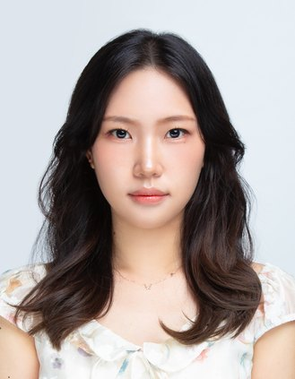
데이터에서 시뮬레이션으로,
시뮬레이션에서 시각화로.
C/C++와 CUDA를 기반으로 물리 시뮬레이션과 볼륨 렌더링을 연구해 온 그래픽스 개발자입니다. 3D 데이터 처리부터 GPU 병렬 연산, 렌더링, Qt GUI까지 하나의 소프트웨어로 연결합니다.
한성대학교 컴퓨터공학 석사 · 2026.08
좌우 독립 메시와 직물 텍스처를 적용한 실시간 PBD 커튼 시뮬레이션입니다.
세 편 모두 같은 질문을 이어서 풀었습니다. 연성체 표면의 변형을 어떻게 표현할지,
그리고 그 연산을 얼마나 효율적으로 처리할지 함께 고민했습니다.
NeRF, PBD 및 병렬 리샘플링을 결합한 실시간 3D 볼륨 변형체 시각화
권상민, 전소진, 박준이, 김다솔, 계희원
한국컴퓨터그래픽스학회 논문지 30(3), 189–198
KCI 논문 정보STC: A Skin Tension Constraint Model for Position-Based Dynamics
전소진, 서지완, 계희원
한국컴퓨터그래픽스학회 논문지 31(4), 21–31
KCI · DOI 10.15701/kcgs.2025.31.4.21이방성 피부 장력 제약(ASTC)을 이용한 PBD 기반 방향성 절개 반응
김관중, 전소진, 계희원
2026 한국컴퓨터그래픽스학회 학술대회
물리 시뮬레이션부터 GPU 연산, 3D 렌더링, GUI까지. 실제 구현 경험을 중심으로 정리했습니다.
연구용 시뮬레이션 엔진 및 그래픽스 소프트웨어 개발
제약 조건 병렬 계산, 3D 텍스처 샘플링 및 리샘플링
3D 데이터 시각화와 렌더링 파이프라인 구현
GUI 구조 설계, 기능 모듈화 및 렌더링 연동
Research Source AvailabilitySTC, VDR, NeuralDynaRender의 연구실·공동 연구 소스코드와 원본 데이터는 비공개입니다. Research Overview에서는 공개 가능한 논문, 알고리즘 설명, 결과와 개인 기여를 제공합니다. QtGTCG와 Unity의 Source Code에서는 공개 범위를 구분한 구현 코드를 볼 수 있습니다.
Skin Tension Constraint: 삼각형 면적 기반 피부 인장 제약
기존 PBD 물리엔진의 거리·부피 제약만으로는 절개 주변 피부의 인장 반응을 충분히 표현하기 어려웠습니다. 이를 보완하기 위해 피부 표면에 선택적으로 적용하는 삼각형 면적 기반 Skin Tension Constraint(STC)를 제안했습니다.
핵심 성과새로운 표면 제약을 기존 GPU 기반 변형 파이프라인에 통합해 절개 주변의 벌어짐을 시각적으로 개선했습니다. 세 데이터셋에서 병렬 리샘플링 시간 증가율은 3.23–7.66%였습니다. 이는 전체 시스템 FPS나 임상적 정확도를 의미하지 않습니다.
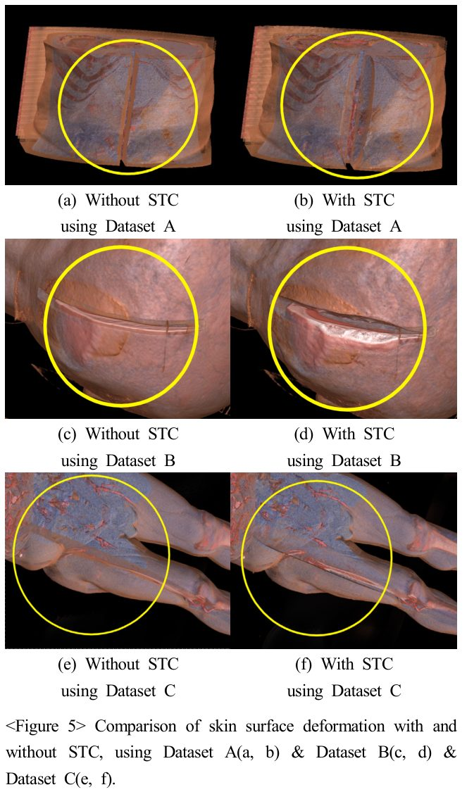
피부는 몸이 외부 공기와 맞닿는 경계에서 생깁니다. 이 점에 착안해, 사면체의 네 정점 중 공기로 분류되는 정점이 정확히 하나일 때만 나머지 세 정점이 이루는 면을 피부 표면으로 등록했습니다.
공기 정점 (α = 0)피부 정점 (α > 0)
# 논문 알고리즘 설명용 의사코드
for tet in tetrahedra:
air = [v for v in tet if alpha[density(v)] == 0]
if len(air) == 1:
tri = tet − air # 나머지 세 정점
register_skin(tri,
rest_area = area(tri),
stiffness = normalize(mean_density(tri)))공기 정점이 없으면 내부 조직, 둘 이상이면 경계가 불명확한 영역이라 제외합니다. 연속된 외피만 활성화되므로 내부 구조에는 장력이 걸리지 않고, 제약 수도 표면 삼각형 수로 줄어듭니다.
면적이 기준보다 커질 때만 복원 계수를 키워, 늘어난 피부가 원래 크기로 당겨지는 반응을 만듭니다. 보정량은 역질량과 면적 그래디언트로 세 정점에 나눕니다.
| 데이터셋 · PBD 해상도 | 그룹핑 (ms) | 증가 | 리샘플링 (ms) | 증가 |
|---|---|---|---|---|
| A · 129×129×76 | 1447 → 1493 | 3.18% | 74.06 → 79.73 | 7.66% |
| B · 129×129×138 | 2753 → 2773 | 0.73% | 126.52 → 131.89 | 4.24% |
| C · 129×129×289 | 5384 → 5438 | 1.00% | 257.75 → 266.08 | 3.23% |
세 해상도의 데이터셋(A, B, C)에서 STC 적용 여부에 따른 전처리 그룹핑 시간과 PBD 병렬 리샘플링 시간을 비교했습니다. 한 프레임마다 거리 제약과 STC 순서로 제약 투영을 5회 반복했고, 각 단계는 CUDA로 병렬 처리했습니다. 리샘플링 시간은 연속 10프레임 평균이며, 실험 장비는 NVIDIA GeForce RTX 3090입니다.
STC를 추가해도 세 데이터 모두에서 그룹핑 시간과 커널 단위 병렬 처리 성능은 기존과 큰 차이가 없었습니다. STC가 삼각형 단위의 독립적인 제약이라 기존 병렬 그룹핑과 충돌 없이 통합되고, 피부 표면 경계에만 적용되어 연산 대상 요소 수가 전체 볼륨에 걸친 거리·부피 제약의 10% 이하이기 때문입니다.
출처: 게재 논문 5.4절, Table 4
Anisotropic Skin Tension Constraint, 이방성 피부 장력 제약2026 한국컴퓨터그래픽스학회 포스터 · 공동 연구 (공저)
STC는 삼각형 면적이 늘어난 양만 보고, 어느 방향으로 늘어났든 하나의 계수로 똑같이 당깁니다. 방향과 무관하게 같은 세기로 반응하므로 등방성입니다.
실제 피부는 절개 방향에 따라 주름이 한쪽으로 정렬되고 비대칭으로 수축하는 이방성 거동을 보입니다. 등방성 STC는 절개 벌어짐은 안정적으로 근사하지만, 절개 주변 변형의 방향과 국소성을 따로 제어하기 어려웠습니다.
기존 제공 ASTC 원고의 예비 결과입니다. 같은 절개 시나리오에서 방향 항을 뺀 ISO-Baseline(Extended-ISO)과 비교한 값이며, 게재된 STC 논문의 수치와 구분합니다. 절개 형상과 실시간 성능은 그대로 두고, 절개 주변 변형의 방향 정렬과 국소 반응을 강화했습니다.
CT 영상 기반 변형 시뮬레이션을 위한 혼합형 프레임워크: HP-ChainMail·PBD 활성 블록 기반 제한 보정
고해상도 CT 볼륨의 변형 시뮬레이션에서는 사용자 입력을 주변 조직으로 전달하는 속도와 조직의 구조적 안정성을 함께 고려해야 합니다. ChainMail의 빠른 변형 전파와 PBD의 제약 보정을 결합하고, 전체 영역을 반복적으로 계산하는 대신 활성 영역에 연결된 제약만 평가하는 혼합형 프레임워크를 설계했습니다.
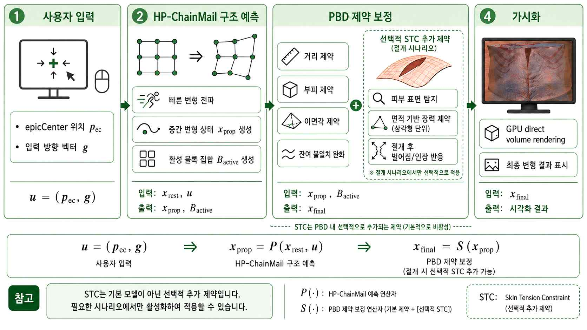
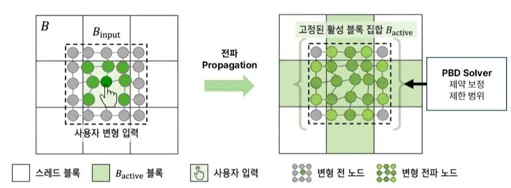
핵심 성과동일한 warm-start 조건에서 전체 도메인 보정(M4) 대비 활성 블록 보정(M3)의 PBD 보정 속도가 Small 10.77배, Medium 7.96배 향상되었습니다. 전체 프레임 속도나 전체 시뮬레이션 시간의 향상률은 아닙니다.
기여는 HP-ChainMail이나 PBD를 새로 정의한 데 있지 않습니다. HP-ChainMail을 PBD 앞의 구조 예측 단계로 두고, 그 결과인 xprop와 Bactive를 PBD의 초기 상태와 제약 평가 범위로 다시 쓰는 구조입니다.
이웃 요소의 상대 변위가 물성별 허용 범위를 벗어나면 그 범위 안으로 끌어오면서 변형을 퍼뜨립니다. 이렇게 만든 xprop에서 PBD를 시작하는 것을 warm-start, 변형 전 상태에서 시작하는 기존 방식을 cold-start로 구분했습니다.
반복 종료에는 정점 위치 변화량의 최댓값과 부피 제약 위반량의 개선율을 씁니다. ChainMail이 edge 구조는 먼저 잡아주지만 사면체 부피는 보장하지 않기 때문에, 거리 대신 부피 개선이 멈췄는지를 봅니다.
볼륨을 8³ 블록으로 나누고, ChainMail 전파가 실제로 지나간 블록을 Bactive로 기록합니다. 원래 ChainMail에서 이 정보는 전파를 관리하는 용도였는데, 이를 PBD가 어디를 보정할지 정하는 범위로 재사용했습니다. 전파가 끝나면 Bactive는 고정되고, PBD는 전체 도메인 대신 이 블록에 연결된 제약만 평가합니다.
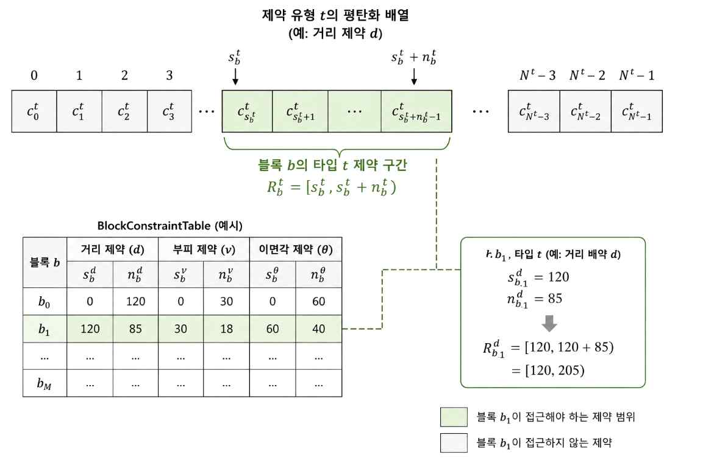
연구 알고리즘을 구현하는 것뿐 아니라 동일한 CT 볼륨과 입력에서 여러 솔버를 비교할 수 있는 실험 환경을 구성했습니다. 볼륨·변형·렌더링의 책임을 분리하고 Qt 인터페이스를 통해 조작과 결과 확인을 연결했습니다. 아래에는 연구용 구조와 공개 저장소 정비 과정의 구현이 함께 포함되어 있습니다.
같은 warm-start에서 제약 평가 범위만 다르게 한 M3(활성 블록)와 M4(전체 도메인)의 PBD 보정 시간(relaxMs)입니다. 변형이 국소적일수록 이득이 크고, 활성 영역이 넓어지면 전체 보정 비용에 가까워집니다.
활성 비율과 시간 비율이 정확히 비례하지 않는 것은 커널 실행, 메모리 접근, atomic 연산 같은 고정 비용 때문입니다.
실험 환경: NVIDIA GeForce RTX 3090, AMD Ryzen 9 3900X, Windows 10, C++/CUDA 12.6. Abdomen 512×512×300, Head 512×512×544, Lower body 512×512×1152 CT를 4배 다운샘플링, 블록 크기 8³.
| 변형 규모 | 활성 블록 | M4 (ms) | M3 (ms) | 속도 향상 |
|---|---|---|---|---|
| Small | 15 / 2,560 | 8.46 | 0.79 | 10.77× |
| Medium | 86 / 2,560 | 8.53 | 1.07 | 7.96× |
| Large | 476 / 2,560 | 10.04 | 3.96 | 2.54× |
학위논문 표 7-5. Abdomen, Hybrid Active(M3)와 Hybrid Global(M4). 시간은 보정 반복 1회의 평균이며 가속비는 논문의 보고값입니다.
M1은 ChainMail만, M2는 ChainMail 전파 없이 PBD만(cold-start), M3가 제안 방식입니다. Abdomen에서 M2는 세 변형 규모 모두 반복 상한 300회 안에 종료 조건을 만족하지 못했고, M3는 Small 59회, Medium 68회에 종료했습니다. Large에서는 M3도 300회 안에 종료하지 못했습니다.
| 규모 | 방법 | relaxMs | 반복 | 종료 |
|---|---|---|---|---|
| Small | M1 | 0.98 | – | – |
| M2 | 8.11 | 300 | ✗ | |
| M3 | 0.79 | 59 | ✓ | |
| Medium | M1 | 0.92 | – | – |
| M2 | 8.17 | 300 | ✗ | |
| M3 | 1.07 | 68 | ✓ | |
| Large | M1 | 0.92 | – | – |
| M2 | 8.25 | 300 | ✗ | |
| M3 | 3.96 | 300 | ✗ |
학위논문 표 7-4. Abdomen 변형 규모별 비교
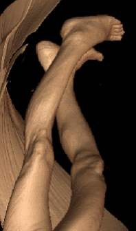
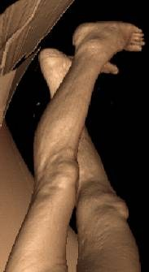
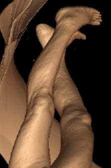
비틀림 조건. M1은 비틀림이 몰린 부위가 가늘어지거나 과하게 늘어나고, M3는 PBD 보정으로 M2와 비슷한 구조적 변형을 보입니다.
학위논문 그림 7-1 중 Lower Body / Twist
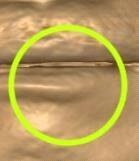
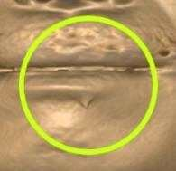
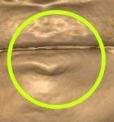
단일점 강제 변위. M2는 입력이 한 점에 몰려 뾰족하게 함몰되고, ChainMail 전파를 먼저 거친 M3는 변위가 주변으로 넓게 분산됩니다.
학위논문 그림 7-2. Head / epiCenter Push
NeRF로 복원한 볼륨에 PBD 변형과 CUDA 병렬 리샘플링 연결
스마트폰으로 촬영한 영상에서 복원한 NeRF 볼륨을 PBD 물리엔진과 결합해 변형하고 시각화하는 4인 캡스톤 프로젝트입니다. 저는 신경망 학습 자체가 아닌, 생성된 볼륨을 물리엔진 및 렌더링 파이프라인에 연결하는 부분을 담당했습니다.
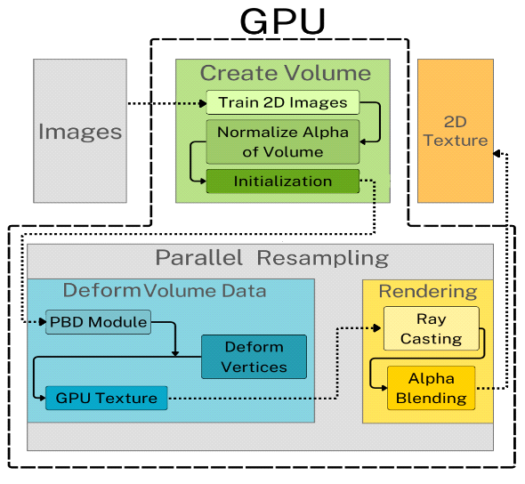
핵심 성과서로 다른 데이터 표현과 해상도를 사용하는 NeRF, PBD, 볼륨 렌더링을 하나의 변형 파이프라인으로 연결했습니다.
물리 계산은 64³에서 하고 화면은 256³으로 그리기 때문에, 성긴 변형 결과로 고해상도 볼륨을 다시 만들어야 합니다. 볼륨을 작은 사면체로 쪼개 모든 사면체를 GPU에서 동시에 처리했습니다.
기존 단일 채널 볼륨과 달리 NeRF 볼륨은 색상 정보도 보존해야 합니다. CUDA 3D 텍스처에서 float4 값을 읽어 보간된 네 채널을 출력 격자에 저장하도록 수정했습니다.
아래는 데이터 흐름을 설명하기 위한 의사코드입니다. 실제 연구실 구현은 공개하지 않습니다. 샘플링 위치는 변형된 사면체의 보간으로 원본 볼륨 좌표계에서 계산합니다.
원본 위치 ← 변형 사면체의 보간으로 계산
RGBA ← 원본 볼륨을 삼선형 보간해 샘플링
출력 복셀 ← 색상 3채널과 불투명도를 함께 저장NeRF는 촬영이 집중된 중심부는 정확하지만 바깥으로 갈수록 노이즈와 먼지 같은 저밀도 입자가 생깁니다. 볼륨 중심의 타원체 바깥 복셀을 0으로 만들고, 임계값보다 낮은 밀도는 완전히 투명하게 처리했습니다. 임계값 5, 20, 35를 비교해 형상과 세부 구조가 가장 잘 드러나는 20을 택했습니다.
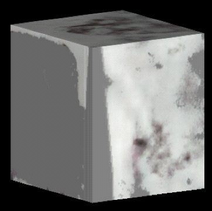
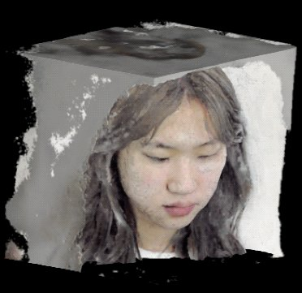
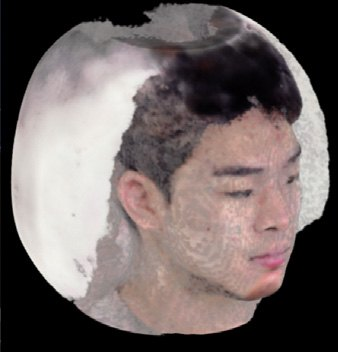
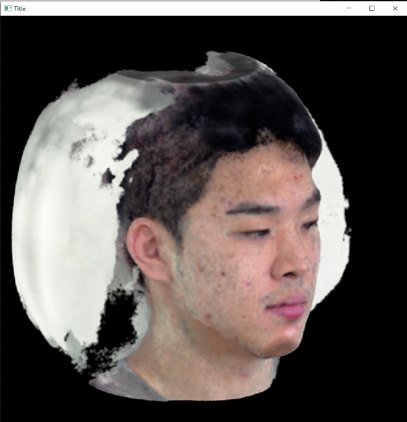
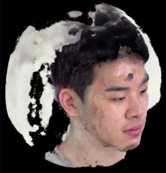
게재 논문 Figure 2, 3
NeRF의 밀도는 0에서 무한대 범위라 그대로 쓰면 색이 왜곡됩니다. α = 1 − e−τ로 0~1의 불투명도로 바꿔 실제 색에 가깝게 맞췄습니다.
렌더링은 광선 투사와 알파 블렌딩이며, 누적 불투명도가 0.99를 넘으면 광선을 조기 종료합니다. 볼륨을 GPU 텍스처로 옮겨 하드웨어 보간, 텍스처 캐시, 자동 경계 검사를 활용했습니다.
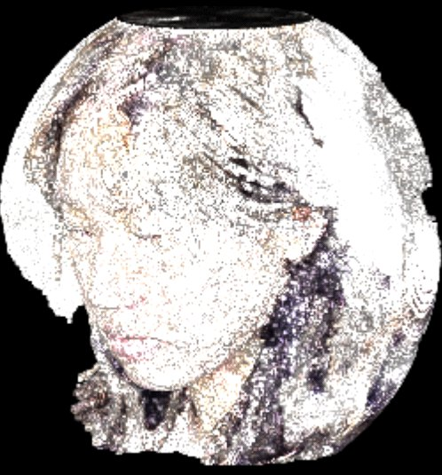
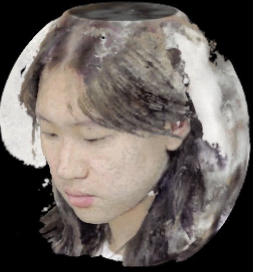
게재 논문 Figure 5
512³ 볼륨(2GB)은 256³보다 변형 시간이 약 43배, 렌더링 시간이 약 26배 더 걸렸습니다. 메모리 접근 병목으로 보고 256³(256MB)을 택했습니다. float4 볼륨이라 메모리는 기존 방법의 8배지만, 축별 해상도를 절반으로 줄여 복셀 수를 8분의 1로 낮추고 실시간성을 지켰습니다.
볼륨을 GPU 텍스처로 한 번 더 복사하는 비용은 약 700GB/s 대역폭에서 1ms 정도라, 많은 삼선형 보간에서 얻는 이득이 더 큽니다.
실험 환경: AMD Ryzen 9 3900X, 64GB 메모리, NVIDIA GeForce RTX 3090. Instant-NGP 2,500~3,000 스텝 학습, iPhone 14 Pro로 1분 20초 촬영.
| 데이터 | 크기 | 채널 | 메모리 |
|---|---|---|---|
| 볼륨 | 256×256×256 | 4 | 256 MB |
| 텍스처 | 512×512 | 3 | 768 KB |
게재 논문 Table 1
NeRF 볼륨은 표면 밀도만 학습되어 내부 밀도가 정확하지 않습니다. 밀도 평균으로 강성을 정하면 물체가 지나치게 출렁여서 강성을 사용자 지정 값으로 두고 비교했습니다. 64³ 변형체에서 1.0 미만이면 내부가 과하게 출렁여 1.0으로 고정했습니다.
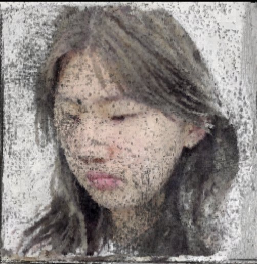
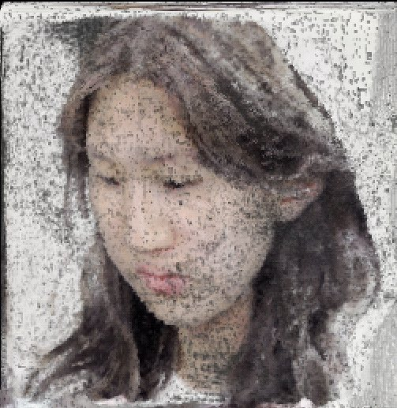
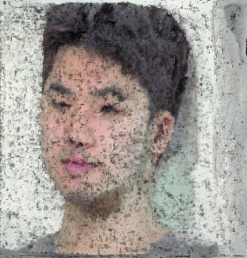
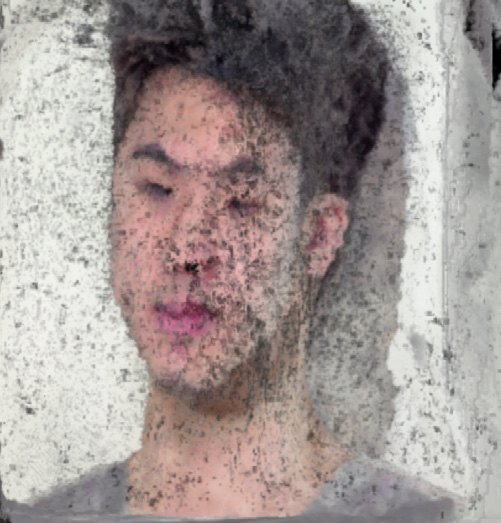
게재 논문 Figure 6
PBD 외에도 축이나 중심점을 기준으로 한 수식 변형을 같은 파이프라인에 넣었습니다. Wave는 z좌표와 시간으로 y축 방향 주기 이동, Twist는 거리와 시간에 따른 z축 회전, Bubble은 중심점 기준 방사형 확장과 수축입니다.
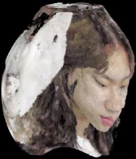
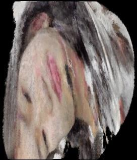
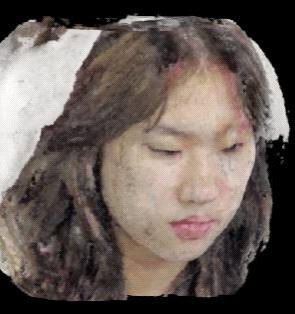
게재 논문 Figure 7
게재 논문 6장 결론 기준
Geometric Tools for Computer Graphics 스터디를 Qt로 직접 구현한 멀티뷰 기하 뷰어
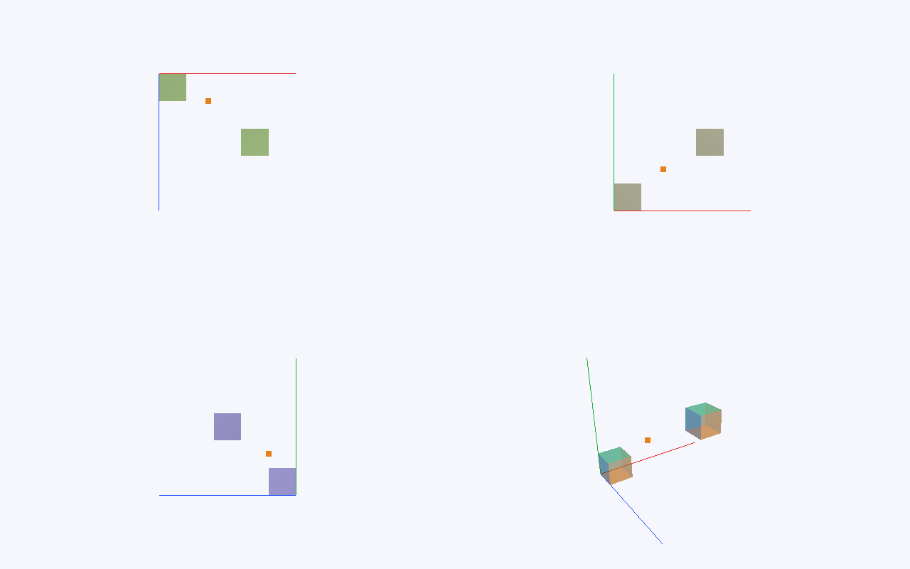
컴퓨터그래픽스 연구의 기반이 되는 기하학과 선형대수를 익히기 위해 『Geometric Tools for Computer Graphics』(Schneider, Eberly)를 스터디했습니다. 학습한 개념을 직접 구현하고 시각적으로 확인할 수 있는 Qt 기반 멀티뷰 기하 뷰어를 개발했습니다.
학습 방식수학적 개념을 공부하고, 코드로 구현하고, 실제 화면에서 결과를 확인하는 과정을 반복했습니다.
GTCG 학습 노트 보기 Notion각 개념을 공부한 뒤 같은 내용을 Qt의 QVector3D, QMatrix4x4로 구현하고, 네 시점에서 결과가 맞는지 확인했습니다. 공부한 내용은 노션 학습 노트에 정리했습니다.
시뮬레이션 연구 외에도 3D 환경 구성, 사용자 입력, 이벤트 처리와 UI를 연결하는 응용 소프트웨어 개발을 경험했습니다.
2024.03 · Unity 2022.3, C#, Photon PUN 2 · 2인 팀 (권상민, 전소진)
열대 섬과 설원에서 위험 요소를 피해 나침반을 찾고 탈출하는 싱글·멀티플레이 생존 시뮬레이션입니다.
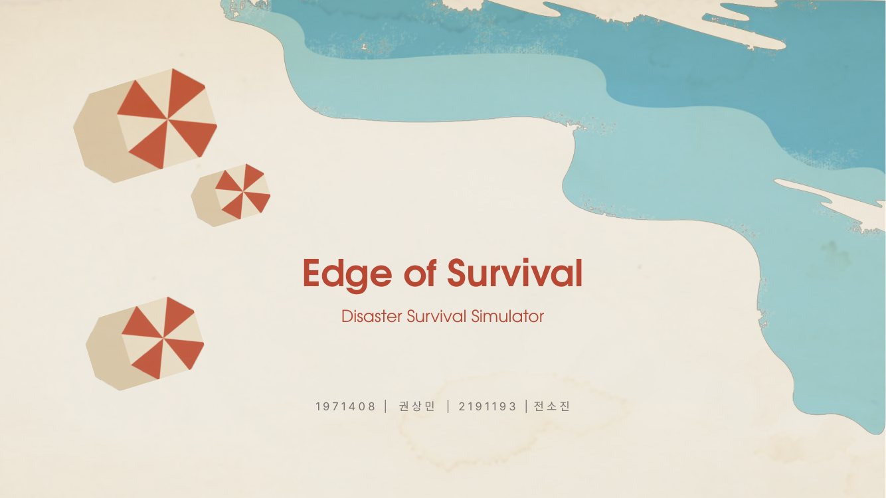
2023.09 · 가상현실 과목 · Unity 2022.3, C# · 2인 팀 (이영재, 전소진)
실내·야외 화재 상황에서 이동, 신고 및 대피 행동을 체력 변화와 연결한 교육용 대피 시뮬레이터입니다.
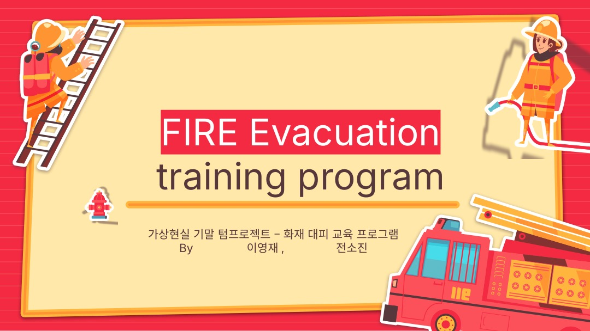
코드를 이해하는 연구생에서, 문제를 정의하고 해결하는 개발자로.
학부연구생으로 처음 받은 과제는 일주일 동안 약 6,000줄의 연구 코드를 분석하는 일이었습니다. 기존 코드의 흐름을 이해하는 것부터 시작해, 점차 직접 문제를 정의하고 알고리즘을 설계하는 연구자로 성장했습니다.
Understand & Implement
기존 그래픽스 코드를 분석하고 기하학과 선형대수를 공부했습니다. NeRF와 PBD를 결합하는 캡스톤 프로젝트에서 배운 내용을 실제 시스템에 적용했습니다.
Design & Experiment
기존 PBD의 한계를 분석하고 피부 인장 제약 STC를 제안했습니다. 알고리즘 설계부터 CUDA 구현, 실험, 제1저자 논문 작성까지 경험했습니다.
Integrate & Optimize
ChainMail과 PBD를 결합한 하이브리드 프레임워크를 설계하고 활성 블록 기반 보정과 Qt 실험 환경을 구성하며 석사 연구를 마무리했습니다.
처음에는 주어진 코드를 이해하는 것이 목표였지만, 이제는 문제에 맞는 구조를 직접 설계하고 구현하는 것을 목표로 합니다.
기존 기술을 이해하고 새로운 해결책으로 연결합니다. STC와 VDR 연구에서 기존 알고리즘의 한계를 분석하고 새로운 제약 조건과 혼합형 계산 구조를 설계했습니다.
맡은 일의 맥락과 결과에 책임을 갖습니다. 연구뿐 아니라 학생조교와 학생연구원 활동을 통해 여러 사람의 요구를 조율하고 프로젝트 운영을 지원하는 경험을 쌓았습니다.
AI 모델 학습 및 시스템 통합 역량을 넓히고 싶습니다. 데이터마다 달라지는 물리 파라미터를 반복적으로 조정하면서 데이터 기반 보정의 필요성을 느꼈습니다. 물리 시뮬레이션과 AI를 연결하는 기술을 앞으로의 학습 과제로 삼고 있습니다.
연구용 구현 경험을 바탕으로 더 다양한 개발 환경에서 협업하고, 유지보수 가능한 소프트웨어를 만드는 역량도 키우고자 합니다.
Understand → Implement → Verify
먼저 수학적 원리와 기존 코드의 흐름을 이해하고, 직접 구현한 뒤 시각화와 실험으로 결과를 확인합니다. GTCG 스터디에서 학습한 기하 개념을 Qt 멀티뷰 뷰어로 구현한 것이 대표적인 사례입니다.
스스로 이해하고, 함께 성장하는 개발. 학부연구생 시절 선배에게 배운 책임감을 바탕으로, 다른 사람이 이해하고 이어갈 수 있는 코드를 작성하고 지식을 공유하는 개발자가 되고 싶습니다.
연구 경험, 업무 경험과 교내 활동을 구분해 정리했습니다.
석사과정 · Graduate Research
학부연구생 · Undergraduate Research
학습관리교사 보조
학생연구원
학생조교
팀 프로젝트와 개발 활동
2023 사무국장